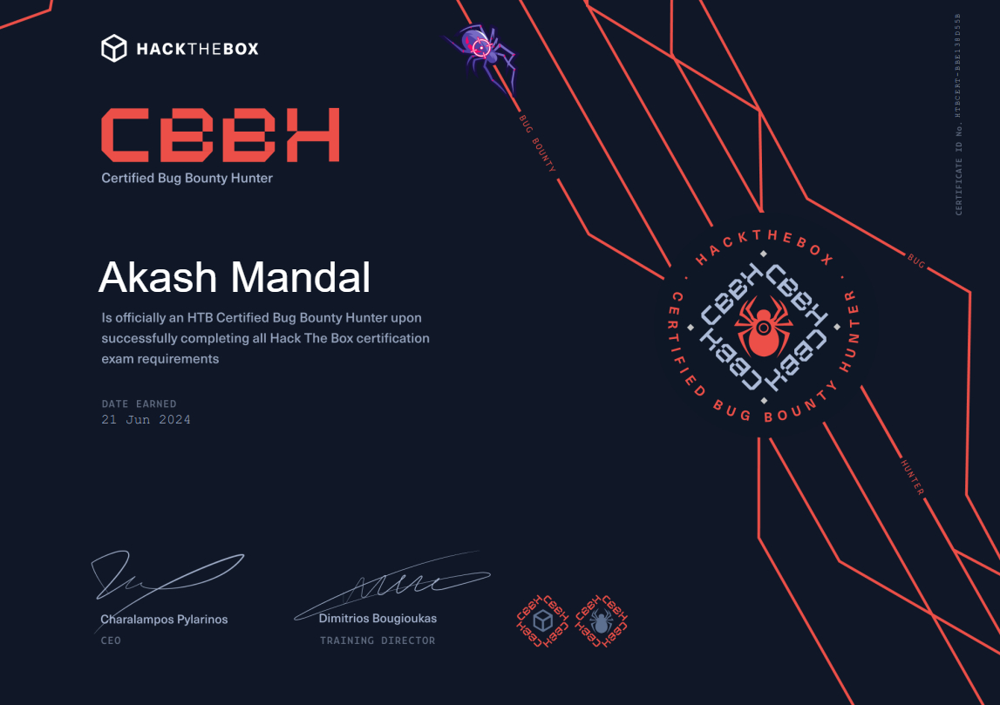
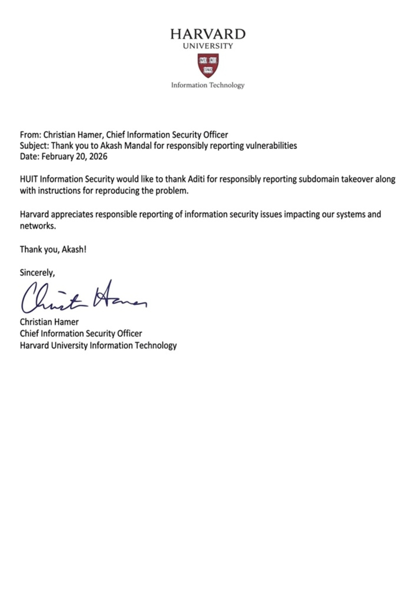
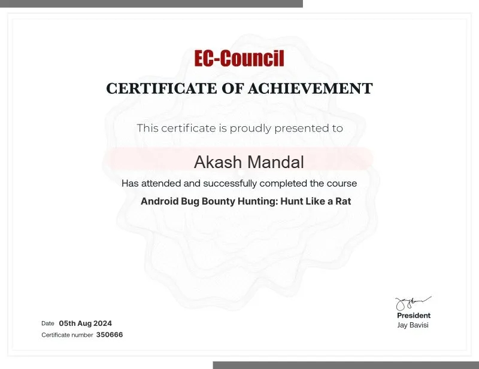

আকাশ
The Student Who Found a Bug in NASA's Website
No formal training, no computer at home — just a school computer lab, an English degree in progress, and a habit of reading websites like short stories.

Fact File
- Nationality
- Indian
- Occupation
- Freelance web designer & app developer
- Education
- English Honours (ongoing)
- Known for
- Reporting a bug on NASA's official website
- Approach
- Self-taught
WEST BENGAL — Akash is an undergraduate studying English Honours in West Bengal. He also builds websites for clients, develops his own apps, and reports security bugs to organisations like NASA. He learned everything on his own, starting from his school's computer lab.
He works as a freelance web designer and app developer, and is the developer of SkyLink Esports, a live Free Fire tournament platform. In his own words, he is an introvert — more comfortable with books and code than with crowds, and content with that.
Achievements
- Reported a security bug on NASA's official website through their Vulnerability Disclosure Program — the flaw was acknowledged by the organisation.
- Found and reported security vulnerabilities on several other international websites, receiving acknowledgements from the organisations involved.
- Designed, built and deployed SkyLink Esports — a Free Fire tournament platform handling sign-ups, tournament management and payments — entirely on his own.
- Completed client website projects end to end as a freelance web designer, alongside full-time undergraduate studies.
- Learned web development and security research without any formal computer training — self-taught from documentation, tutorials and practice.
- Maintained a consistent academic record as a class topper through school while teaching himself to code.
Certificates & Recognitions
Some of the acknowledgements he has received for responsible vulnerability disclosure:



The School Lab
The curiosity started with a simple question — how does a website actually work? With no computer at home and no formal training anywhere, the school lab became the classroom. HTML was learned from documentation, JavaScript from tutorials, patience from long nights of trial and error. Through it all he remained a consistent class topper, though the lab hours mattered more to him than the marks.
From Curiosity to NASA
Answering how led to a harder question — where does a website quietly break? The hunt for that answer is what turned a curious reader into a security researcher. It led to a flaw on NASA's official website, found and responsibly disclosed through their Vulnerability Disclosure Program. It has since led to vulnerabilities reported on several other international websites, each met with acknowledgements from the organisations involved.
His method is unhurried — reading a target site for hours before touching anything, the way he reads a short story: closely, and more than once.
The Work
Client websites and independent apps — designed, built, and shipped end to end, with no team and no shortcut. His live app is the clearest evidence of the range:
App · LiveSkyLink Esports
A Free Fire tournament platform — handles sign-ups, tournament management, and payments, built and deployed end to end by one person.
Visit app →The Reading Habit
English Honours was not a detour from technology; it was a deliberate choice. Literature and code were never separate rooms for him. His current research sits exactly where the two overlap — treating language itself as a system with rules worth uncovering. Off hours are spent almost entirely reading: novels, essays, and technical writing share the same shelf.
"A good bug report and a good essay are the same craft: taking something complicated and saying it simply."
■